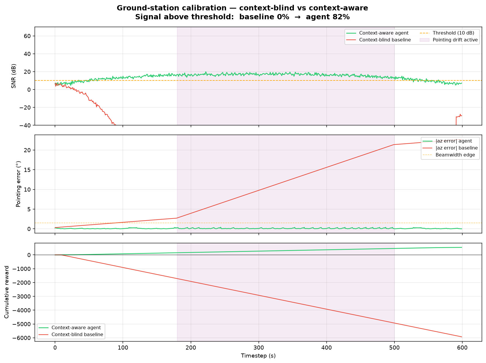

Keep the satellite link
alive — autonomously.
An RL environment for autonomous satellite ground-station operation. An agent acquires, tracks, diagnoses, and recovers a degrading link under real orbital physics — scored on a signal you cannot fake.
Same dip. Same physics.
Different diagnosis.
A slow pointing drift hits mid-pass. The context-blind baseline misreads the SNR dip as interference and chases frequency — never re-centering the beam, so the drift carries the signal off the dish. The context-aware agent reads it correctly and holds the link.

It isn't tracking. It's judgment under a closing window.
Routine pointing is already automated — ephemeris plus a control loop aims the dish. The hard part is what happens when a link degrades mid-pass and an agent must diagnose why and recover before the window closes.
Too many satellites
Planet Labs runs 200+ imagers, Starlink thousands more launching weekly, and the Deep Space Network operates across light-minutes where no real-time human loop exists. Every one is under pressure to cut operator headcount per pass.
Diagnosis under ambiguity
Drift, RFI, polarization rotation, multipath, and hardware faults all look alike in the first seconds of degradation. Detecting the SNR drop is trivial; identifying the cause is not.
Decisions against the clock
With 400 seconds left you can hold, measure, and diagnose carefully. With 30, you snap to ephemeris and accept the cost. The right move depends on time you can't get back.
A task that prompts and grades — automatically.
The environment wraps a Gymnasium satellite simulation as a HUD v6 task. The agent drives a ground-station console through MCP tools; the reward is the fraction of the pass kept above the usable SNR threshold — pure physics, no human judgment, no LLM-as-judge.
Boot the pass
A deterministic episode is built: a real-physics arc, an injected anomaly, starting pointing/frequency errors.
Prompt the agent
The task yields the mission brief and live telemetry. The agent sees SNR, lock, pointing error, frequency, polarization, noise temperature.
Operate via tools
take_action, get_telemetry, request_context — served over an in-process MCP capability.
Grade the world
The pass flies out; reward = fraction above threshold (0.0–1.0). The agent can't fake signal — mispoint and the link budget shows it.
@env.template(id="hold-the-link") async def hold_the_link(anomaly="drift", seed=0): # build a deterministic real-physics pass console = GroundStationConsole(build_episode(...)) # 1st yield → the prompt the agent acts on answer = yield mission_brief(console) # agent drove the console through MCP tools… console.finish() # 2nd yield → the reward (% pass above threshold) yield console.score() # 0.0 – 1.0
The numbers say what's possible.
Context says what's correct.
A bank of Kalman filters can diagnose a known anomaly on a clean signal — our own heuristic hit 98% lock on drift. What a filter cannot read is the prose a real operator lives by: mission briefs, maintenance logs, spectrum advisories, handoff coordination. That's what makes this agent-native.
| Situation | IMM / Kalman bank | Language agent |
|---|---|---|
| Known anomaly, clean signal | Optimal — wins | Competitive |
| Advisory: “RFI self-clears, don’t chase it” | Hops frequency (wrong) | Rides it out (correct) |
| Log: “az servo sticky, avoid large slews” | Large slew, risks a jam | Uses freq / polarization fixes |
| Brief: “continuous lock or nothing” | Maximizes average SNR | Trades for continuity, else hands off |
| A sixth, unmodeled anomaly | Misclassifies to nearest known | Reasons from the log, adapts |
Open weights mean Gemma can be reinforcement-fine-tuned directly on this environment's reward via Fireworks AI — the trained policy is the deliverable.
Real orbits. A real link budget. Five ways it breaks.
Episodes are generated procedurally from live TLEs, a physically-grounded link budget, and procedural anomalies. The agent never sees the anomaly parameters — it must diagnose from noisy telemetry.
Anomaly modes — distinct signatures, overlapping under noise
Drift
SNR slowly falls, az/el error grows from ephemeris. Fix: nudge the beam back.
RFI burst
Sudden drop, interference spikes the noise floor. Fix: shift frequency, narrow bandwidth.
Polarization
~3 dB symmetric drop. Fix: cycle H → V → RHCP → LHCP to re-match.
Multipath
Rapid oscillating SNR, uncorrelated with pointing. Fix: small nudge or hold.
Fault
Noise temperature rises, SNR degrades globally. Fix: narrow bandwidth or hand off.
Physically-grounded link budget
SNR comes from a real equation, not a lookup. If the agent mispoints, the math shows it.
# Gaussian beam · sinc² freq response · FSPL g_point = pointing_gain_loss(az_err, el_err) g_freq = frequency_loss(freq_offset_hz) g_pol = polarization_loss(mode, true_pol) rx_dbw = EIRP + GAIN − (FSPL + atm_loss) signal = 10**(rx_dbw/10) * g_point*g_freq*g_pol noise = noise_temp*k_B*BW + interference return 10*log10(signal / noise) # dB
24 actions · diagnose, then commit
Pointing nudges at three scales, receiver tuning, and meta-actions. The trick is probing before fixing.
# pointing — 3 step sizes per axis nudge_az_±{small|medium|large} nudge_el_±{small|medium|large} snap_to_ephemeris # receiver shift_freq_±{fine|med|coarse} cycle_polarization narrow_bandwidth · widen_bandwidth # meta hold # measure cleanly request_handoff # last 20% only
The reward — dense, asymmetric, fully verifiable
Signal maintained. Accumulates to +600 over a perfect pass — a dense reward at every step, no sparsity problem.
10× the positive reward. One second of lock loss costs ten of good signal — prevention beats recovery.
Movement has a cost. The agent learns to hold when signal is good and reserve big slews for emergencies.
Learning gradient: random agent ≈ −2500 · heuristic ≈ +450 — a ~3000-point signal for RFT to climb.
Built on the sponsors' stack.
You can improve a model at
anything you can verify.
Here, the thing worth teaching is keeping a satellite link alive — diagnosing interference from drift from hardware fault and recovering before the pass window closes, under physics you cannot fake.